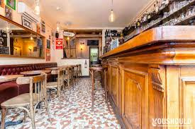
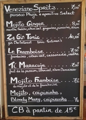
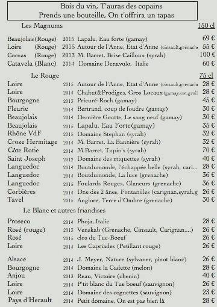

Voici une adresse incontournable du 18ème arrondissement
40 rue des 3 frères
01-42-55-95-56
un endroit agréable ou passer un bon moment entre amis apres le boulot ou en weekend!
En effet, ce bar d'époque est situé sur la butte Montmartre à deux pas du Sacré-cœur.
C'est l'endroit idéal pour se divertir entre amis en y buvant du vin, de la bière et des cocktails maisons !
Si vous souhaitez profiter du week-end et prolonger la fête : tous les vendredis et samedis c'est musique live avec DJ ou concert.
Fraises Tagada servies à la demande avec l'addition et le sourire.
Pour en savoir plus sur les concerts et évènements:
Tagada barIci pas de chichis, pas de lounge et pas de branchitude qui tienne. Juste les basics d'un bar qui fait du bien. Un lieu conviviale. Des consommations à des prix raisonnables. Et des petits trucs à manger de qualité pour agrémenter l'apéro.
Avec du mobilier de brasserie (comptoir en bois massif !), des luminaires récupérés chez mamy et des objets de décoration de PMU, le Tagada bar affiche sa raison d'être. Ici on vient pour boire un coup et discuter avec ses amis. On ne vient pas pour admirer un nouveau concept lounge de Starck.
Bons cocktails. Avec une caipiroska framboise (et non fraises Tagada) en spécialité. Les planches de charcuterie/fromages sont également très sympas. On vous recommande le Mont d'Or à partager!
N'oublions pas le vin!
